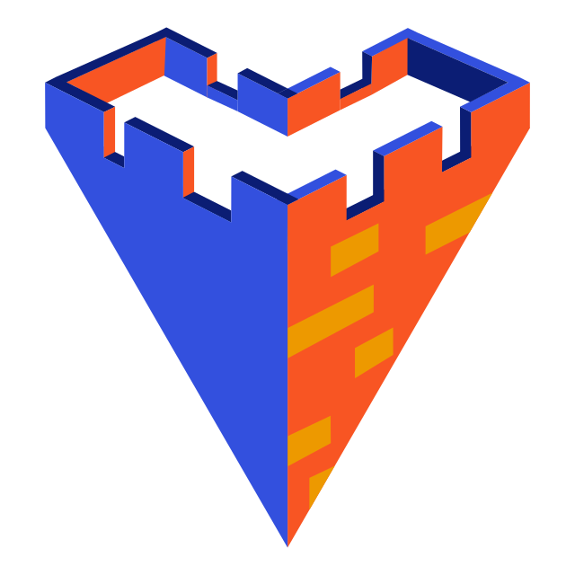

Bastion
- Bastion is a scalable, open-source Backend-as-a-Service that gets deployed to the cloud with AWS, allowing a frontend developer to quickly set up a backend while maintaining control of the code and infrastructure.
- Bastion is flexible and extensible, integrating with AWS Lambda to provide custom functionality for a variety of use cases.
- And because Bastion runs using AWS infrastructure, it scales automatically when more resources are required.